Concept d'application mobile · étude de cas
Le sport amateur, traité comme du pro.
Kopain montre les matchs amateurs autour de toi, trouve le joueur qui manque à ta partie et fait vivre la rivalité entre clubs avec une carte joueur à collectionner et des paris en monnaie fictive.
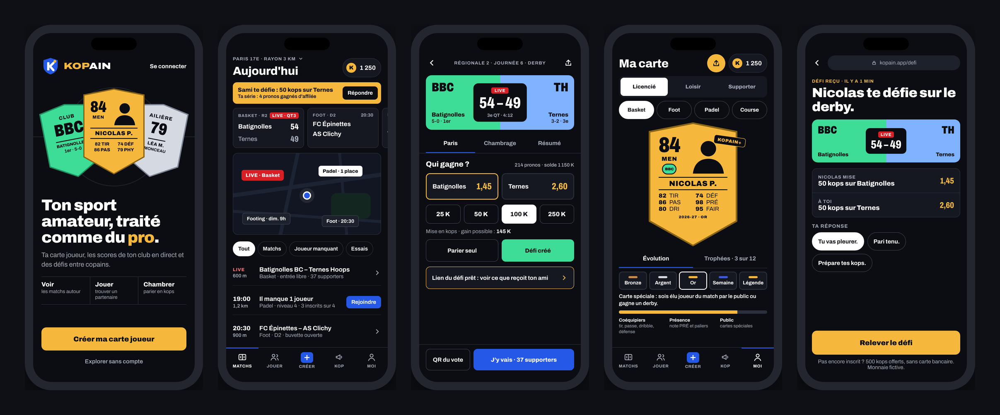
Trois usages, une seule app
Les outils existants parlent à l'intérieur du club ou à un seul sport. Kopain parle à l'extérieur, tous sports confondus.
14 écrans à parcourir
Chaque écran est cliquable : paris, défis, votes, cartes et navigation fonctionnent dans le navigateur.
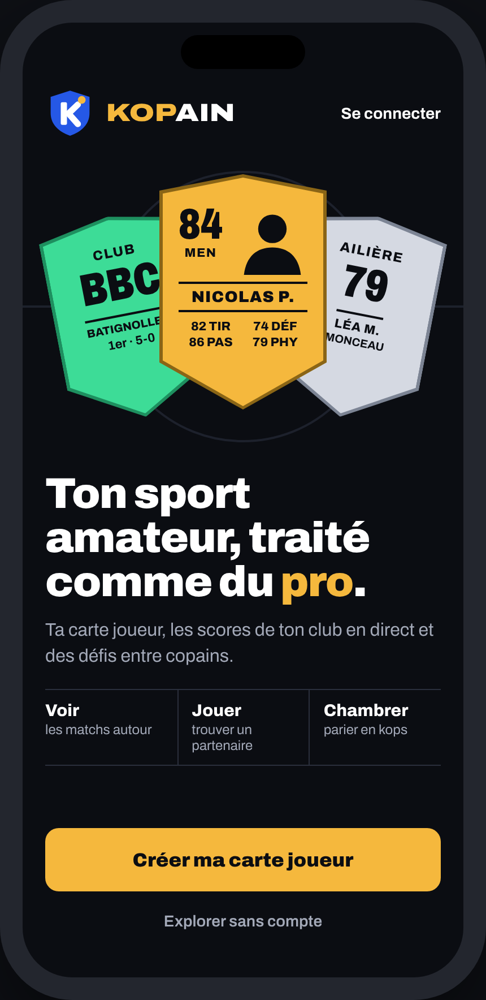
BienvenueLogo, promesse, cartes en éventail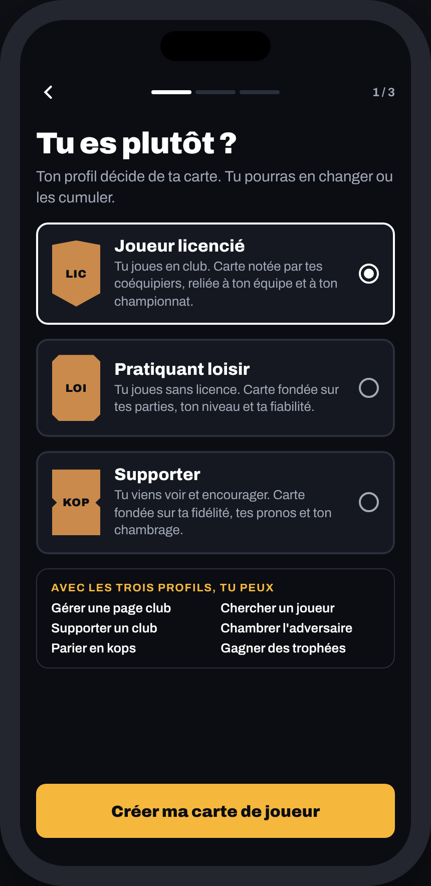
Trois profilsLicencié, loisir, supporter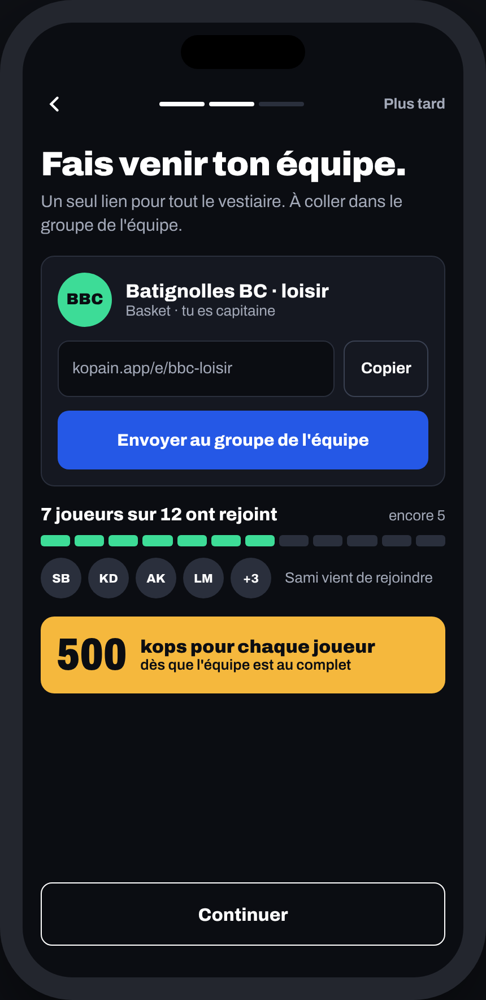
Ton équipeUn lien pour tout le vestiaire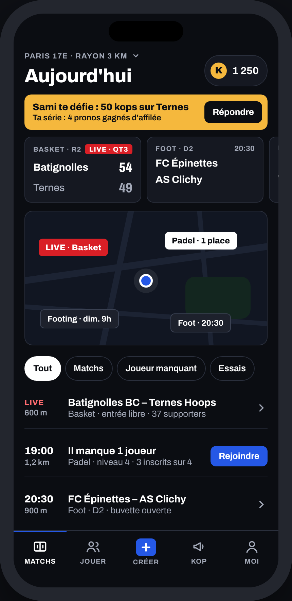
Aujourd'huiDéfi, scores en direct, carte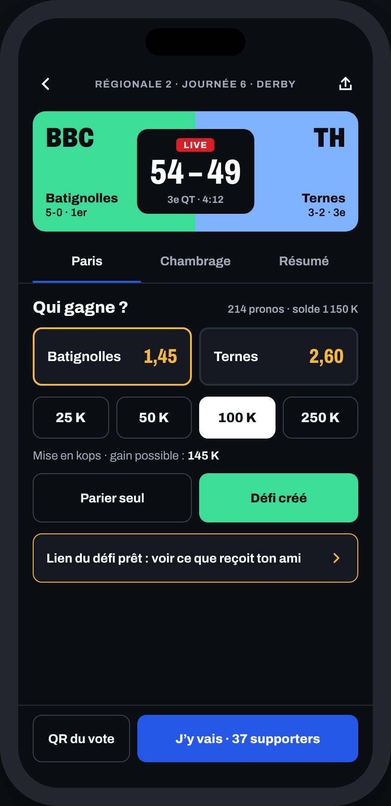
Fiche matchParis, défi, chambrage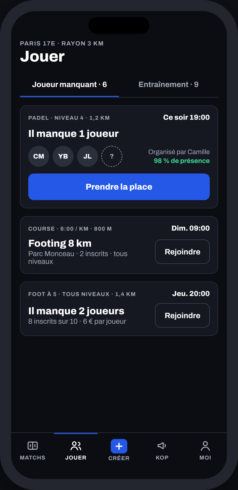
JouerJoueur manquant, partenaires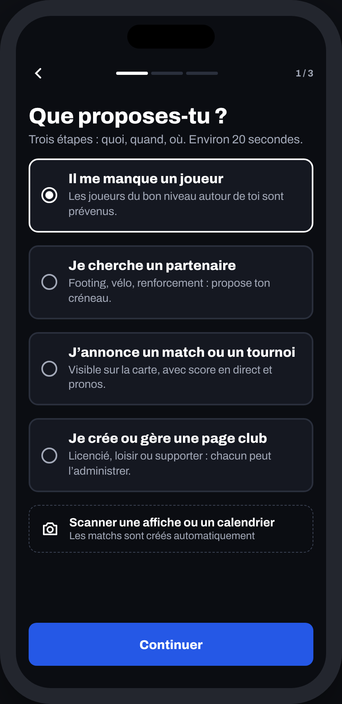
CréerAnnonce en trois étapes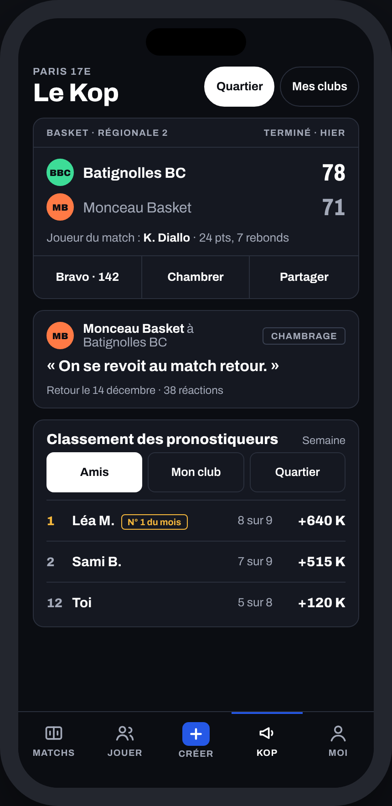
Le KopRésultats, chambrages, classements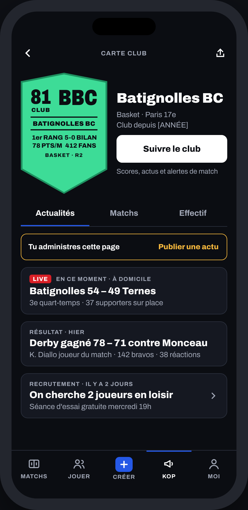
Carte clubActualités, administration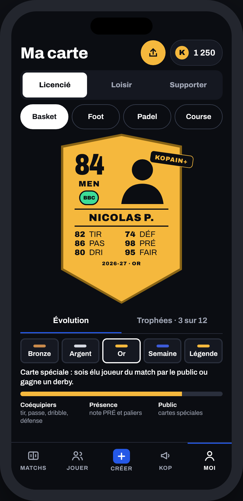
Ma carteDu bronze aux cartes spéciales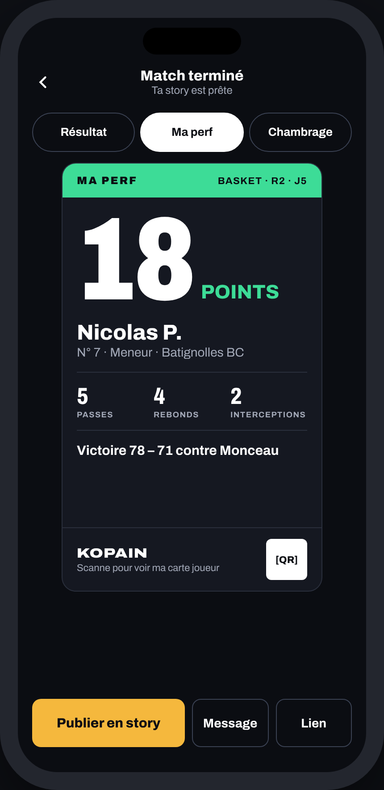
PartageStory résultat, perf, chambrage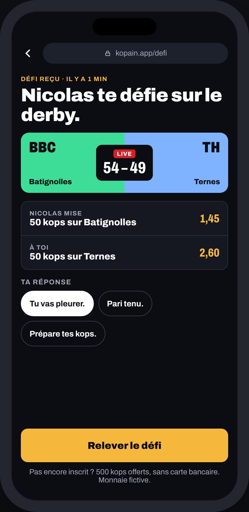
Défi reçuCe que voit l'ami invité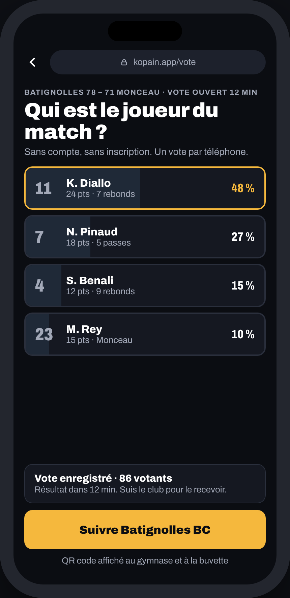
Vote du publicSans compte, par QR code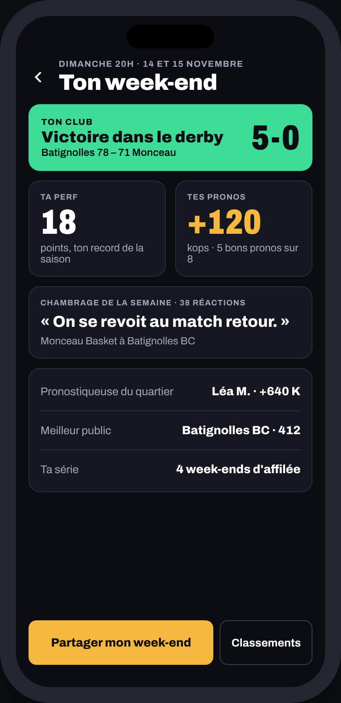
Résumé du week-endLe rendez-vous du dimancheUn marché de masse, un modèle sobre
L'app reste gratuite : voir, jouer et publier remplissent la carte. Les revenus viennent des joueurs assidus, des clubs structurés et des commerces locaux.
Méthode
Projet personnel mené par Nicolas Pinaud en pilotant Claude (Anthropic), de l'idée au prototype.
Vision et arbitrages
Définition des cibles, choix produit et design, orientation de chaque itération : passage d'un style ludique à une esthétique « sport pro », trois profils, carte évolutive, paris et chambrage.
Recherche et business
Étude de marché sourcée, analyse concurrentielle, modèle économique, projections sur trois ans, plan de lancement et leviers de viralité.
Design et prototype
Maquettes de 14 écrans, puis prototype web cliquable publié sur GitHub Pages, sans installation.